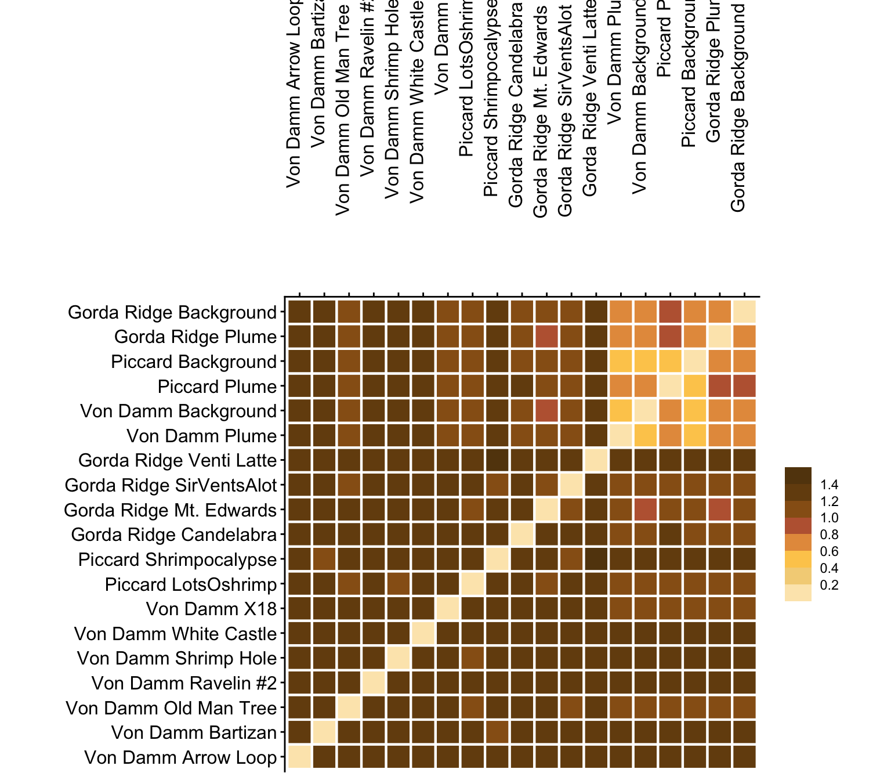
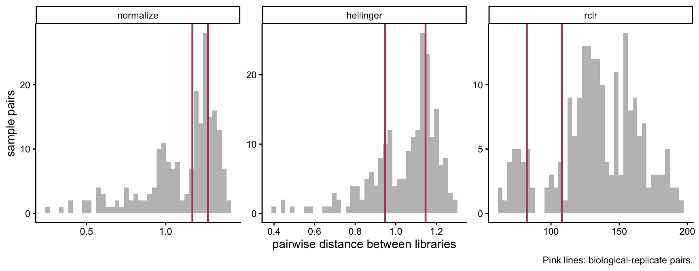
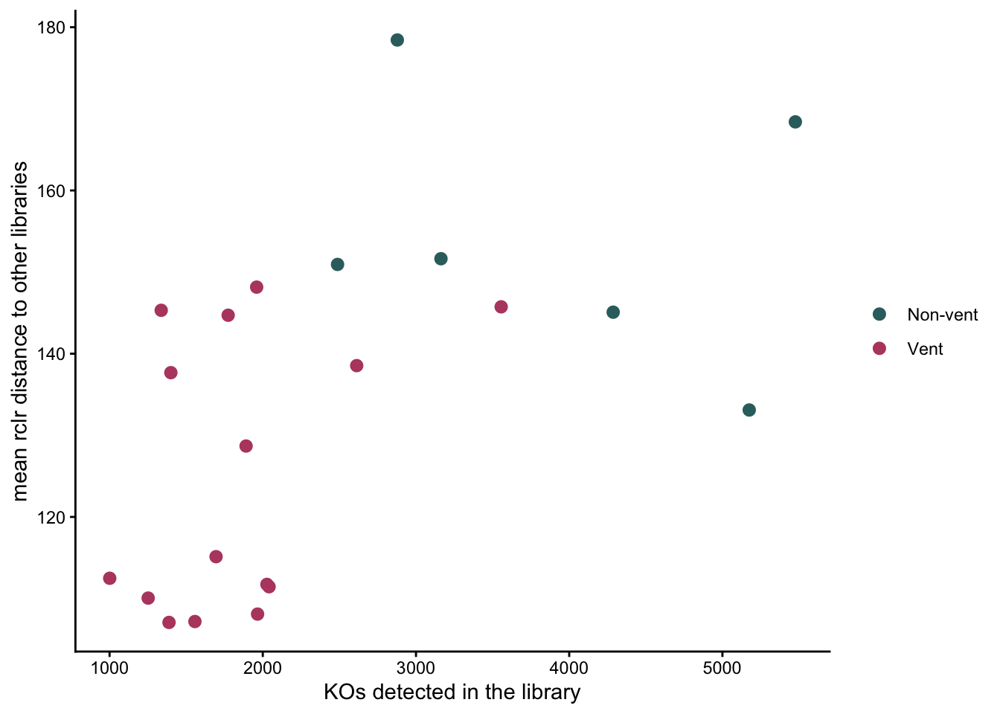
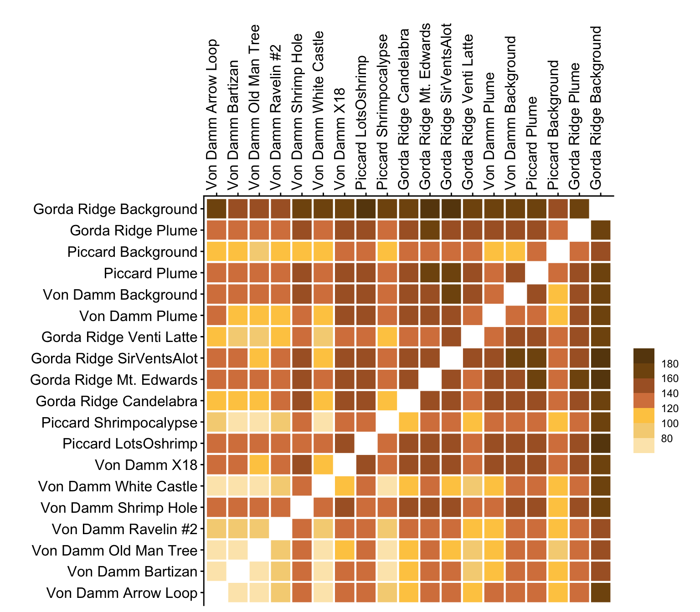
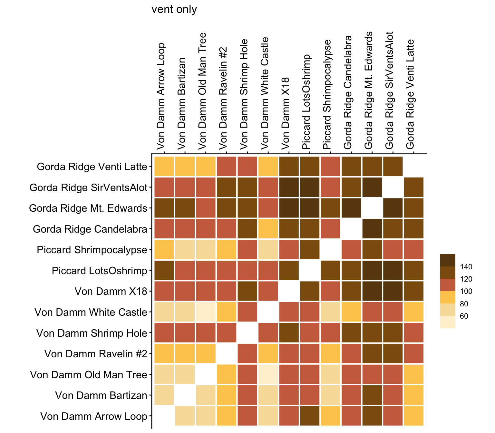
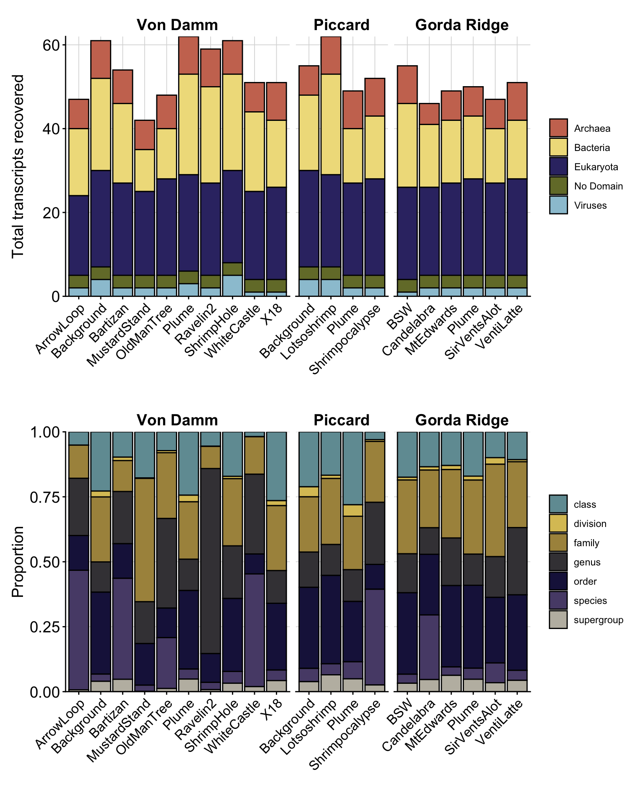
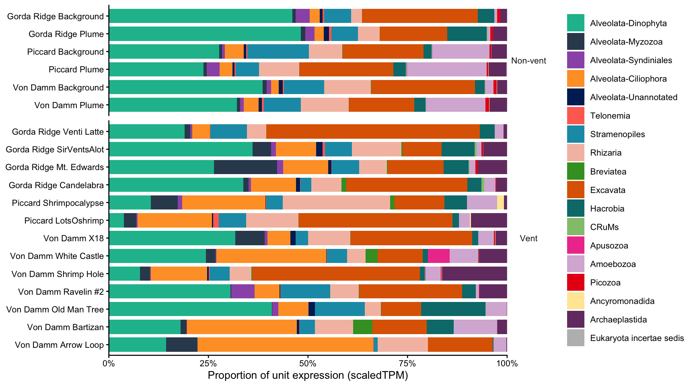
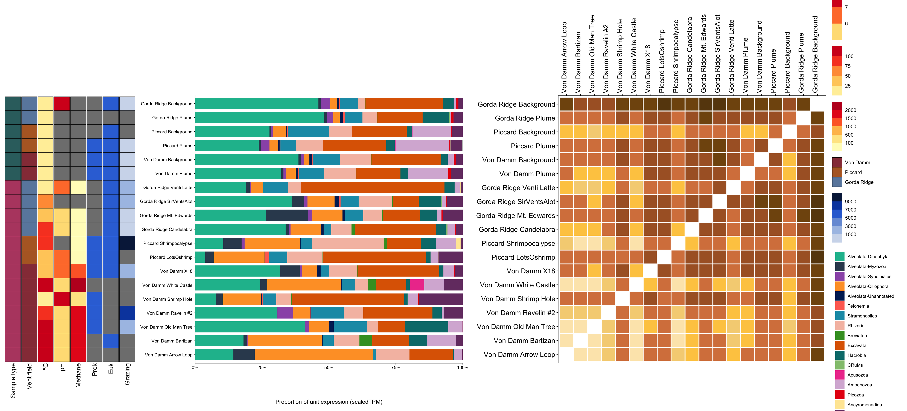

Code
source(if (file.exists("_setup.R")) "_setup.R" else "scripts/_setup.R")
# locator: works from project root (render) or scripts/ (interactive)Overview of the curated metaT data: sample metadata, pairwise Euclidean distance between samples, and taxonomic composition. Reads the handoff written by 02_taxonomy_grain_ladder.qmd.
source(if (file.exists("_setup.R")) "_setup.R" else "scripts/_setup.R")
# locator: works from project root (render) or scripts/ (interactive)# long_frenemies_annot_tax (curated, Eukaryota), long_frenemies_annot (all domains), key_taxa
load("data/processed/long_frenemies_annot_tax.RData", verbose = TRUE)Loading objects:
long_frenemies_annot_tax
long_frenemies_annot
key_taxasample_meta# unique(sample_meta$field)### Align with sample IDs for these samples
metadata_metaT <- sample_meta %>%
# Add ordering
right_join((long_frenemies_annot_tax %>%
select(raw_label, fieldyear, LOCATION, SAMPLETYPE) |> distinct())) %>%
# Remove sample with too few transcripts
filter(raw_label != "Von Damm_Vent_MustardStand") %>%
# Pivot longer
pivot_longer(TEMP:Grazing, names_to = "VARIABLES", values_to = "VALUES") %>%
group_by(raw_label, VARIABLES) %>%
summarise(VALUE = mean(VALUES)) %>%
separate(raw_label, into = c("VENT_FIELD", "VENT_BIN", "LOCATION"), sep = "_", remove = FALSE) %>%
pivot_wider(names_from = VARIABLES, values_from = VALUE) |>
order_factor()Joining with `by = join_by(raw_label)`
`summarise()` has regrouped the output.Set up heat map
variable_fill <- list(
"Sample type" = "VENT_BIN_ORDER",
"Vent field" = "VENT_FIELD_ORDER",
"°C" = "TEMP",
"pH" = "pH",
"Methane" = "CH4",
"Prok" = "ProkConc",
"Euk" = "EukConc",
"Grazing" = "Grazing")
scale_fill <- list(
scale_fill_manual(values = color_bin),
scale_fill_manual(values = color_field),
scale_fill_stepsn(colors = yl_red, breaks = c(25,50,75,100)),
scale_fill_stepsn(colors = yl_red, breaks = c(4,5,6,7,8)),
scale_fill_stepsn(colors = yl_red, breaks = c(100, 500, 1000, 1500, 2000)),
# Biological
scale_fill_stepsn(colors = blues, breaks = c(2E4,1E5,2E5,1E6,2E6)),
scale_fill_stepsn(colors = blues, breaks = c(200,400,600,800)),
scale_fill_stepsn(colors = blues, breaks = c(1E3,3E3, 5E3, 7E3, 9E3)))
names(scale_fill) <- names(variable_fill)
var_levels <- names(variable_fill)Plot loop.
vent_heatmap <- ggplot(metadata_metaT, aes(y = SAMPLE_NAME_ORDER)) +
purrr::imap(
variable_fill, \(x, y) {
list(
geom_tile(
aes(
x = y,
fill = .data[[x]]
),
color = "black",
width = .95
),
scale_fill[[y]],
ggnewscale::new_scale_fill()
)
}
) +
scale_x_discrete(
limits = var_levels
) +
theme_void() +
theme(
axis.text.y = element_blank(),
axis.text.x = element_text(
angle = 90,
hjust = 1
),
axis.title = element_blank(),
strip.text = element_blank(),
legend.position = "right",
panel.border = element_rect(fill = NA, linewidth = 0.8),
panel.background = element_rect(colour = NA, fill = "transparent"),
plot.background = element_rect(colour = NA, fill = "transparent"),
plot.margin = margin(0, 0, 0, 0, "cm"),
panel.spacing = unit(0, "cm"),
legend.title = element_blank()
)vent_heatmap
First make a numeric matrix.
wide_frenemies_ortholog <- long_frenemies_annot_tax %>%
# Prefilter
filter(raw_label != "Von Damm_Vent_MustardStand") %>%
filter(Domain == "Eukaryota") %>%
# Select params
select(SAMPLE_NAME_ORDER, ko_id, PFAMs, GOs, scaledTPM) %>%
# distinct() dropped 2026-09-27: it collapsed separate transcripts that happened
# to share a TPM value, understating summed expression
unite(FXN_INFO, ko_id, PFAMs, GOs, sep = "_") %>% # Does not include taxonomic information
filter(!FXN_INFO %in% c("-_-_-", "-_-")) %>% # Remove unannotated (fixed 2026-09-27:
# `!= a | != b` was always TRUE, so nothing was removed)
group_by(SAMPLE_NAME_ORDER, FXN_INFO) %>%
summarise(SUM_TPM = sum(scaledTPM)) %>%
pivot_wider(names_from = SAMPLE_NAME_ORDER, values_from = SUM_TPM, values_fill = 0) %>%
column_to_rownames(var = "FXN_INFO") %>%
as.matrix`summarise()` has regrouped the output.
ℹ Summaries were computed grouped by SAMPLE_NAME_ORDER and FXN_INFO.
ℹ Output is grouped by SAMPLE_NAME_ORDER.
ℹ Use `summarise(.groups = "drop_last")` to silence this message.
ℹ Use `summarise(.by = c(SAMPLE_NAME_ORDER, FXN_INFO))` for per-operation
grouping (`?dplyr::dplyr_by`) instead.# rows are genes
# columns are samplesThis matrix does not include taxonomic information. Transcript IDs that did not have a KEGG or Pfam ID were also removed.
Standardization methods using decostand.
# Normalize - margin of sum squares
# ?decostand()
normed_metat_all <- decostand(wide_frenemies_ortholog, method = "normalize", MARGIN = 2)
range(normed_metat_all)[1] 0.000000 0.902974# colSums(data.frame(normed_metat_all))
# rownames(data.frame(normed_metat_all))# ?dist()
# use "normed_metat" from above
dist_norm_metat <- stats::dist(t(normed_metat_all), method = "euclidean", upper = FALSE, diag = FALSE)
rownames(as.data.frame(as.matrix(dist_norm_metat))) [1] "Von Damm Arrow Loop" "Von Damm Bartizan"
[3] "Von Damm Old Man Tree" "Von Damm Ravelin #2"
[5] "Von Damm Shrimp Hole" "Von Damm White Castle"
[7] "Von Damm X18" "Piccard LotsOshrimp"
[9] "Piccard Shrimpocalypse" "Gorda Ridge Candelabra"
[11] "Gorda Ridge Mt. Edwards" "Gorda Ridge SirVentsAlot"
[13] "Gorda Ridge Venti Latte" "Von Damm Plume"
[15] "Von Damm Background" "Piccard Plume"
[17] "Piccard Background" "Gorda Ridge Plume"
[19] "Gorda Ridge Background" Pre-process before plotting
euclidean_compare_all <- as.data.frame(as.matrix(dist_norm_metat)) %>%
rownames_to_column(var = "SAMPLE_X") %>%
pivot_longer(cols = -c(SAMPLE_X), names_to = "SAMPLE_Y", values_to = "VALUE") %>%
mutate(COMPARE = paste(SAMPLE_X, SAMPLE_Y, sep = ";")) %>%
select(COMPARE, VALUE) %>%
separate(COMPARE, c("X", "Y"), sep = ";", remove = FALSE) %>%
mutate(PLOT_X_ORDER = factor(X, levels = label_sample_names),
PLOT_Y_ORDER = factor(Y, levels = label_sample_names))chord_all <- euclidean_compare_all %>%
ggplot(aes(x = PLOT_X_ORDER, y = PLOT_Y_ORDER, fill = VALUE)) +
geom_tile(stat = "identity", color = "white", lwd = 0.75) +
# chord distance runs 0 to sqrt(2); the old breaks stopped at 0.9 and binned 0.9-1.41 together
scale_fill_stepsn(colors = orange_heat, breaks = seq(0.2, 1.4, by = 0.2), limits = c(0, sqrt(2))) +
scale_x_discrete(position = "top") +
coord_equal() +
theme_classic() +
theme(legend.title = element_blank(),
axis.text.x = element_text(angle = 90, color = "black", hjust = 1.5, size = 12),
axis.text.y = element_text(color = "black", size = 12),
strip.text = element_text(size = 5),
strip.background = element_blank()) +
labs(x = "", y = "")
chord_all
Superseded: this chord-distance heatmap is kept as the starting point for the diagnostics below. The figure version (euclidean_all) is rebuilt after them.
The heatmap above uses the chord distance: decostand(method = "normalize") scales each sample to length 1, and the Euclidean distance between length-1 vectors runs from 0 (identical) to √2 ≈ 1.41 (no shared features) (Legendre & Gallagher 2001, Oecologia 129:271-280). Values near 1 or above can come from three different causes, and the steps below test each one:
ko_PFAMs_GOs string splits one KO into many features, so samples share few of them.normalize, hellinger and rclr (the transform 04-07 use; Gloor et al. 2017, Front Microbiol 8:2224) separate samples differently?Positive control throughout: three units are true biological replicates with two libraries each (Von Damm_Vent_Ravelin2, Piccard_Vent_Lotsoshrimp, Gorda Ridge_Non-vent_Plume). A distance worth using puts those pairs among the closest pairs.
# Sparsity of a raw abundance matrix (rows = samples, cols = features)
feature_sparsity <- function(mat) {
pres <- mat > 0
shared <- tcrossprod(pres) # features shared by each sample pair
tibble(n_samples = nrow(pres),
n_features = ncol(pres),
prop_zero = mean(!pres), # share of empty cells
prop_in_one_sample = mean(colSums(pres) == 1),
median_shared = median(shared[upper.tri(shared)]))
}
# Share of each sample's squared length that comes from its 10 largest features.
# This is how much of the chord distance those 10 features control.
top10_share <- function(mat) {
apply(mat, 1, \(x) {
x2 <- sort(x^2, decreasing = TRUE)
sum(head(x2, 10)) / sum(x2)
})
}
# Distance object -> one row per unique sample pair, flagged if the pair is a replicate pair
dist_pairs <- function(d) {
m <- as.matrix(d)
unit <- set_names(str_remove(rownames(m), "\\|.*"), rownames(m)) # sample_id = raw_label|LIB|SAMPLEID
as.data.frame(as.table(m)) |>
as_tibble() |>
rename(a = Var1, b = Var2, dist = Freq) |>
mutate(across(c(a, b), as.character)) |>
filter(a < b) |> # unique pairs, drop the diagonal
mutate(pct = percent_rank(dist), # 0 = closest pair, 1 = farthest
replicate_pair = unit[a] == unit[b])
}
# Spread and replicate control for one distance
dist_diagnostics <- function(d) {
dist_pairs(d) |>
summarise(n_pairs = n(),
min = min(dist),
median = median(dist),
max = max(dist),
cv = sd(dist) / mean(dist), # higher = more contrast between pairs
replicate_pct = median(pct[replicate_pair])) # low = replicates among the closest pairs
}ko_PFAMs_GOs string vs. KOBuilds the same KO table 04-07 use (paired_L4.RData, written at the end of 02), one row per library, under the three transforms. Only the transform changes between the three.
paired_ko <- load_paired(fields = c("Gorda Ridge", "Von Damm", "Piccard"), depth = 4)[load_paired] data/processed/paired_L4.RData (built 2026-10-23 09:06; 318,911 rows)ko_mats <- c("normalize", "hellinger", "rclr") |>
set_names() |>
map(\(tf) build_matrix(paired_ko, "ko_id", min_tpm = 0, transform = tf))bind_rows(ko_pfam_go = feature_sparsity(t(wide_frenemies_ortholog)),
ko = feature_sparsity(ko_mats$rclr$mat),
.id = "feature")Read: if prop_in_one_sample and prop_zero are much higher (and median_shared much lower) for ko_pfam_go than for ko, the high distances partly reflect how features are named, not what the communities express. (n_samples differs because the ko_pfam_go matrix has one column per biological unit: SAMPLE_NAME_ORDER is built from raw_label, so replicate libraries are summed. The ko matrix has one row per library. Summing replicates fills in zeros, so if anything this understates how much sparser ko_pfam_go is.)
bind_rows(ko_pfam_go = enframe(top10_share(t(wide_frenemies_ortholog)), "sample", "top10"),
ko = enframe(top10_share(ko_mats$rclr$mat), "sample", "top10"),
.id = "feature") |>
group_by(feature) |>
summarise(min = min(top10), median = median(top10), max = max(top10))Read: a median above ~0.5 means fewer than 10 features set more than half of each sample’s position, so the chord distance mostly compares those few. hellinger (square root) and rclr (log) both reduce this.
dist_check <- map(ko_mats, "dist") |>
map(dist_diagnostics) |>
list_rbind(names_to = "transform")
dist_checkmap(ko_mats, "dist") |>
map(dist_pairs) |>
list_rbind(names_to = "transform") |>
mutate(transform = factor(transform, levels = c("normalize", "hellinger", "rclr"))) |>
ggplot(aes(x = dist)) +
geom_histogram(bins = 40, fill = "grey75") +
geom_vline(data = \(df) filter(df, replicate_pair),
aes(xintercept = dist), colour = "#b74a70", linewidth = 0.8) +
facet_wrap(~ transform, scales = "free") +
theme_classic() +
labs(x = "pairwise distance between libraries", y = "sample pairs",
caption = "Pink lines: biological-replicate pairs.")
Read: cv says how much contrast the distance has (a narrow pile against the ceiling = low cv). replicate_pct is where replicate pairs fall among all pairs: near 0 means the distance recognises replicates as most similar, near 0.5 means it cannot tell them from random pairs. In the histogram, pink lines should sit at the far left.
In rclr, zeros stay 0, so a KO detected in one library and absent from another adds to their distance. Libraries that detect more KOs can end up far from the rest for that reason alone. Check whether each library’s mean distance tracks the number of KOs it detects, and whether the prevalence filter 04 uses (prevalence_filter(..., 4): a KO must be detected in at least 4 libraries) removes the dependence. Richness can also differ between habitats for real reasons, so the last chunk asks whether KO richness differs between vent and non-vent libraries.
richness_check <- function(m) {
dist_pairs(m$dist) |>
pivot_longer(c(a, b), values_to = "sample_id") |>
group_by(sample_id) |>
summarise(mean_dist = mean(dist)) |>
left_join(enframe(rowSums(m$mat > 0), "sample_id", "n_kos"), by = "sample_id")
}
# Same build as 04: KO must be detected in >= 4 libraries
ko_mats_prev <- c("normalize", "hellinger", "rclr") |>
set_names() |>
map(\(tf) build_matrix(prevalence_filter(paired_ko, "ko_id", min_samples = 4),
"ko_id", min_tpm = 0, transform = tf))
list(unfiltered = ko_mats$rclr, prevalence_4 = ko_mats_prev$rclr) |>
map(richness_check) |>
map(\(df) cor.test(~ mean_dist + n_kos, data = df, method = "spearman", exact = FALSE)) |>
map(\(ct) tibble(rho = unname(ct$estimate), p = ct$p.value)) |>
list_rbind(names_to = "kos_used")# Spread and replicate control after the prevalence filter
map(ko_mats_prev, "dist") |>
map(dist_diagnostics) |>
list_rbind(names_to = "transform")richness_check(ko_mats$rclr) |>
left_join(distinct(paired_ko, sample_id, vent_bin), by = "sample_id") |>
ggplot(aes(x = n_kos, y = mean_dist, colour = vent_bin)) +
geom_point(size = 2.5) +
scale_colour_manual(values = c(Vent = "#b74a70", `Non-vent` = "#346D6E"), name = NULL) +
theme_classic() +
labs(x = "KOs detected in the library", y = "mean rclr distance to other libraries")
Read: if rho drops well below ~0.4 after the filter and replicate_pct stays low, the filtered rclr distance is the one to use (and matches 04). If vent and non-vent libraries form separate clouds along the x-axis, part of the richness signal is habitat, not an artifact.
mantel(ko_mats$hellinger$dist, ko_mats$rclr$dist, method = "spearman", permutations = 999)
Mantel statistic based on Spearman's rank correlation rho
Call:
mantel(xdis = ko_mats$hellinger$dist, ydis = ko_mats$rclr$dist, method = "spearman", permutations = 999)
Mantel statistic r: -0.6111
Significance: 1
Upper quantiles of permutations (null model):
90% 95% 97.5% 99%
0.268 0.326 0.386 0.444
Permutation: free
Number of permutations: 999mantel(ko_mats$normalize$dist, ko_mats$rclr$dist, method = "spearman", permutations = 999)
Mantel statistic based on Spearman's rank correlation rho
Call:
mantel(xdis = ko_mats$normalize$dist, ydis = ko_mats$rclr$dist, method = "spearman", permutations = 999)
Mantel statistic r: -0.5671
Significance: 1
Upper quantiles of permutations (null model):
90% 95% 97.5% 99%
0.256 0.341 0.416 0.475
Permutation: free
Number of permutations: 999Read: a high Spearman r (say > 0.8) means the transforms rank sample pairs the same way, so the choice changes the scale, not the conclusion; use rclr to match 04-07. A low r means the conclusion depends on the transform and needs to be reported as such.
The distance used in the figures, chosen from the diagnostics above: KOs from the shared analysis set (the same table as 04-07), a KO kept if detected in at least 4 libraries (prevalence_filter(..., 4), as in 04), replicate libraries averaged to their biological unit, then rclr and Euclidean distance (robust Aitchison; Martino et al. 2019, mSystems 4:e00016-19). rclr was the only transform that placed true replicate libraries among the closest pairs (Step 3). It has no fixed maximum, so the colour scale runs over the observed range of each matrix, and the two heatmaps (all units, vent only) are not on the same scale.
# Heatmap of a unit x unit distance; the diagonal (0) is left blank
plot_unit_distance <- function(d, title = NULL) {
m <- as.matrix(d)
as.data.frame(as.table(m)) |>
as_tibble() |>
rename(X = Var1, Y = Var2, VALUE = Freq) |>
mutate(across(c(X, Y), as.character)) |>
filter(X != Y) |>
mutate(PLOT_X_ORDER = factor(X, levels = order_sample_names, labels = label_sample_names),
PLOT_Y_ORDER = factor(Y, levels = order_sample_names, labels = label_sample_names)) |>
ggplot(aes(x = PLOT_X_ORDER, y = PLOT_Y_ORDER, fill = VALUE)) +
geom_tile(color = "white", lwd = 0.75) +
scale_fill_stepsn(colors = orange_heat, n.breaks = 6,
limits = range(m[upper.tri(m)])) +
scale_x_discrete(position = "top") +
coord_equal() +
theme_classic() +
theme(legend.title = element_blank(),
axis.text.x = element_text(angle = 90, color = "black", hjust = 0, size = 12),
axis.text.y = element_text(color = "black", size = 12)) +
labs(x = "", y = "", title = title)
}unit_dist_all <- paired_ko |>
prevalence_filter("ko_id", min_samples = 4) |>
build_matrix("ko_id", min_tpm = 0, transform = params$transform, aggregate = "mean")
euclidean_all <- plot_unit_distance(unit_dist_all$dist)
euclidean_all
Pairwise functional dissimilarity across all samples based on KEGG identities. KOs detected in fewer than 4 libraries were removed, and scaled TPM was summed by KO within each library and averaged across replicates. Data were transformed using a robust centered-log-ratio, where non-zero values are log transformed and zeroes remain zero. A euclidean distance was performed on rclrmatrix to form the robust Aitchison distance.
Same build restricted to vent libraries. The prevalence filter runs within the vent libraries (as in 04’s vent-only models), so the KO set differs from the all-unit matrix.
unit_dist_vent <- paired_ko |>
filter(vent_bin == "Vent") |>
prevalence_filter("ko_id", min_samples = 4) |>
build_matrix("ko_id", min_tpm = 0, transform = params$transform, aggregate = "mean")
euclidean_ventonly <- plot_unit_distance(unit_dist_vent$dist, title = "vent only")
euclidean_ventonly
# tmp <- long_frenemies_annot |>
# filter(!is.na(Domain)) |>
# filter(!(Domain == "")) |>
# group_by(Domain) |>
# summarise(SUM_TPM = sum(scaledTPM),
# COUNT = n())
# tmp
#
# tmp |>
# group_by(Domain) |>
# mutate(TPM_PERC = (100*(SUM_TPM/sum(tmp$SUM_TPM))),
# count_PERC = (100*(COUNT/sum(tmp$COUNT))))tax_domain_supergroup <- long_frenemies_annot %>%
group_by(SUPERGROUP_18S, Domain, Supergroup, LOCATION, VENT_FIELD, VENT_BIN) %>%
summarise(SUM_TPM = sum(scaledTPM))`summarise()` has regrouped the output.
ℹ Summaries were computed grouped by SUPERGROUP_18S, Domain, Supergroup,
LOCATION, VENT_FIELD, and VENT_BIN.
ℹ Output is grouped by SUPERGROUP_18S, Domain, Supergroup, LOCATION, and
VENT_FIELD.
ℹ Use `summarise(.groups = "drop_last")` to silence this message.
ℹ Use `summarise(.by = c(SUPERGROUP_18S, Domain, Supergroup, LOCATION,
VENT_FIELD, VENT_BIN))` for per-operation grouping (`?dplyr::dplyr_by`)
instead.# head(tax_domain_supergroup)
tax_domain_supergroup$Domain[tax_domain_supergroup$Domain == ""] <- NA
# unique(tax_domain_supergroup$Domain)
# head(tax_domain_supergroup)Plot domain across all samples.
domain <- tax_domain_supergroup %>%
mutate(Domain = replace_na(Domain, "No Domain"),
Domain = str_replace(Domain, "No supergroup", "No Domain")) %>%
filter(Domain != "") |>
group_by(Domain, LOCATION, VENT_FIELD, VENT_BIN) %>%
summarise(SUM_BY_DOMAIN = sum(SUM_TPM),
COUNT_BY_LEVEL = n()) %>%
mutate(
field_ORDER = factor(VENT_FIELD, levels = order_field),
bin_ORDER = factor(VENT_BIN, levels = order_bin)) %>%
ggplot(aes(x = LOCATION, y = COUNT_BY_LEVEL, fill = Domain)) +
geom_bar(stat = "identity", color = "black") +
facet_grid(cols = vars(field_ORDER), scales = "free_x", space = "free") +
scale_fill_manual(values = c("#CB755F", "#EFDE8A", "#373272", "#747B35", "#9BC5D6")) +
theme_classic() +
scale_y_continuous(expand = c(0,0)) +
theme(legend.position = "right", legend.title = element_blank(),
strip.text.x = element_text(color = "black", face = "bold", size = 14),
strip.background = element_blank(),
# strip.placement = "outside",
axis.text.x = element_text(color = "black", size = 12, angle = 45, hjust = 1, vjust = 1),
axis.title = element_text(color = "black",size = 14),
axis.text.y = element_text(color = "black", size = 14),
panel.grid.major = element_line(color = "#d9d9d9", linewidth = 0.3)) +
labs(x = "", y = "Total transcripts recovered")`summarise()` has regrouped the output.
ℹ Summaries were computed grouped by Domain, LOCATION, VENT_FIELD, and
VENT_BIN.
ℹ Output is grouped by Domain, LOCATION, and VENT_FIELD.
ℹ Use `summarise(.groups = "drop_last")` to silence this message.
ℹ Use `summarise(.by = c(Domain, LOCATION, VENT_FIELD, VENT_BIN))` for
per-operation grouping (`?dplyr::dplyr_by`) instead.head(long_frenemies_annot)# unique(long_frenemies_annot$classification_level)supp_tax_assigned_level <- long_frenemies_annot %>%
# Isolate eukaryotes only
filter(Domain == "Eukaryota") %>%
filter(classification_level != "" | !(is.na(classification_level))) %>%
group_by(classification_level, LOCATION, VENT_FIELD, VENT_BIN) %>%
summarise(SUM_BY_LEVEL = sum(scaledTPM),
COUNT_BY_LEVEL = n()) %>%
mutate(
field_ORDER = factor(VENT_FIELD, levels = order_field),
bin_ORDER = factor(VENT_BIN, levels = order_bin)) %>%
ggplot(aes(x = LOCATION, y = SUM_BY_LEVEL, fill = classification_level)) +
geom_bar(stat = "identity", color = "black", position = "fill") +
facet_grid(cols = vars(field_ORDER), scales = "free_x", space = "free") +
theme_classic() +
scale_y_continuous(expand = c(0,0)) +
scale_fill_manual(values = c("#719ba2", "#dbc364", "#ab924b", "#413f44", "#1c1949", "#584c77", "#bfbbb0")) +
theme(legend.position = "right", legend.title = element_blank(),
strip.text.x = element_text(color = "black", face = "bold", size = 14),
strip.background = element_blank(),
# strip.placement = "outside",
axis.text.x = element_text(color = "black", size = 12, angle = 45, hjust = 1, vjust = 1),
axis.title = element_text(color = "black",size = 14),
axis.text.y = element_text(color = "black", size = 14),
panel.grid.major = element_line(color = "#d9d9d9", linewidth = 0.3)) +
labs(x = "", y = "Proportion")`summarise()` has regrouped the output.
ℹ Summaries were computed grouped by classification_level, LOCATION,
VENT_FIELD, and VENT_BIN.
ℹ Output is grouped by classification_level, LOCATION, and VENT_FIELD.
ℹ Use `summarise(.groups = "drop_last")` to silence this message.
ℹ Use `summarise(.by = c(classification_level, LOCATION, VENT_FIELD,
VENT_BIN))` for per-operation grouping (`?dplyr::dplyr_by`) instead.domain + supp_tax_assigned_level +
plot_layout(nrow = 2)
#ggsave("figures/domain-composition.svg", width = 8, height = 10, device = "svg", limitsize = FALSE)SUPERGROUP_0_ordering and tax_color_metaT now live in R/color_order.R. Load with _setup script.
Composition is computed on the shared analysis set (R/prep_paired.R), the same transcripts 04–07 test: Gorda Ridge, Von Damm and Piccard; lineage resolved past “Eukaryota”; at least one KO; Opisthokonta dropped. Replicate libraries are averaged to their biological unit (unit_expression()). This is the KO-annotated fraction of eukaryotic expression, not all eukaryotic transcripts.
long <- load_long_annot(long = long_frenemies_annot_tax)
paired <- prep_paired(long, depth = 4L)
group_unit <- unit_expression(paired, "cur_group")group_present <- intersect(SUPERGROUP_0_ordering, unique(group_unit$cur_group))
fig_group_bars <- group_unit |>
mutate(cur_group = factor(cur_group, levels = rev(group_present)),
unit_lab = factor(unit, levels = order_sample_names, labels = label_sample_names)) |>
ggplot(aes(x = share, y = unit_lab, fill = cur_group)) +
geom_col(width = 0.8) +
scale_fill_manual(values = tax_color_metaT, breaks = group_present, name = NULL) +
scale_x_continuous(labels = scales::percent, expand = c(0, 0)) +
facet_grid(vent_bin ~ ., scales = "free_y", space = "free_y") +
labs(x = "Proportion of unit expression (scaledTPM)", y = NULL) +
theme_classic(base_size = 10) +
theme(strip.background = element_blank(), strip.text.y = element_text(angle = 0))
fig_group_bars
# ggsave("figures/03-group-bars.svg", fig_group_bars, width = 9, height = 5)
The habitat facet is dropped here so bar rows line up with the heat map and distance panels.
vent_heatmap + (fig_group_bars + facet_null()) + euclidean_all + plot_layout(nrow = 1, guides = "collect", widths = c(0.5, 1, 1))
#ggsave("figures/large-heatmap.svg", width = 22, height = 10, device = "svg", limitsize = FALSE)head(sample_meta)# write.csv(sample_meta, file = "output-tables/table-01.csv")fastq <- read.csv(file = "data/raw/frenemies-sample-list.csv") |>
filter(!(grepl("AXIAL", SITE))) |>
select(SAMPLE = SITE_NUM_FIELDYR_VENT_EXP_SAMPLEID, SITE, NUM, FIELDYR, VENT, EXP, SAMPLEID, SAMPLE_NAME, ORIGIN, CYCLES = `total.cycles.with.additions`)
# fastq$SAMPLE
assem <- read.csv(file = "data/raw/frenemies-metat-samplelist.txt", sep = "\t")
bco <- read.csv(file = "data/raw/bco-dmo_Frenemies.csv") |>
filter(!(grepl("AXIAL", SITE))) |>
select(SAMPLE = FULL_SAMPLEID, RUN, BIOSAMPLE, Bases, Bytes, Experiment, lat_lon)
tables1 <- assem |>
filter(!(grepl("AXIAL_", AssemblyGroup))) |>
select(SAMPLE = SampleName, AssemblyGroup, FastqFile) |>
group_by(SAMPLE, AssemblyGroup) |>
summarise(
FASTQ_NAMES = paste(FastqFile, collapse = "; ")
) |>
left_join(fastq) |>
left_join(bco) |>
filter(SAMPLEID != "FLP")`summarise()` has regrouped the output.
Joining with `by = join_by(SAMPLE)`
Joining with `by = join_by(SAMPLE)`
ℹ Summaries were computed grouped by SAMPLE and AssemblyGroup.
ℹ Output is grouped by SAMPLE.
ℹ Use `summarise(.groups = "drop_last")` to silence this message.
ℹ Use `summarise(.by = c(SAMPLE, AssemblyGroup))` for per-operation grouping
(`?dplyr::dplyr_by`) instead.write.csv(tables1, file = "output-tables/table-S1.csv")sessionInfo()R version 4.6.0 (2026-04-24)
Platform: aarch64-apple-darwin23
Running under: macOS Sequoia 15.8.1
Matrix products: default
BLAS: /Library/Frameworks/R.framework/Versions/4.6/Resources/lib/libRblas.0.dylib
LAPACK: /Library/Frameworks/R.framework/Versions/4.6/Resources/lib/libRlapack.dylib; LAPACK version 3.12.1
locale:
[1] en_US.UTF-8/en_US.UTF-8/en_US.UTF-8/C/en_US.UTF-8/en_US.UTF-8
time zone: America/Chicago
tzcode source: internal
attached base packages:
[1] stats graphics grDevices utils datasets methods base
other attached packages:
[1] patchwork_1.3.2 glue_1.8.1 vegan_2.7-6 permute_0.9-10
[5] lubridate_1.9.5 forcats_1.0.1 stringr_1.6.0 dplyr_1.2.1
[9] purrr_1.2.2 readr_2.2.0 tidyr_1.3.2 tibble_3.3.1
[13] ggplot2_4.0.3 tidyverse_2.0.0
loaded via a namespace (and not attached):
[1] generics_0.1.4 stringi_1.8.9 lattice_0.23-1 hms_1.1.4
[5] digest_0.6.39 magrittr_2.0.5 evaluate_1.0.5 grid_4.6.0
[9] timechange_0.4.0 RColorBrewer_1.1-3 fastmap_1.2.0 jsonlite_2.0.0
[13] Matrix_1.7-6 ggnewscale_0.5.2 mgcv_1.9-4 scales_1.4.0
[17] cli_3.6.6 crayon_1.5.3 rlang_1.3.0 bit64_4.8.6
[21] splines_4.6.0 withr_3.0.3 yaml_2.3.12 otel_0.2.0
[25] tools_4.6.0 parallel_4.6.0 tzdb_0.5.0 vctrs_0.7.3
[29] R6_2.6.1 lifecycle_1.0.5 bit_4.6.0 htmlwidgets_1.6.4
[33] vroom_1.7.1 MASS_7.3-66 cluster_2.1.8.3 pkgconfig_2.0.3
[37] pillar_1.11.1 gtable_0.3.6 xfun_0.60 tidyselect_1.2.1
[41] rstudioapi_0.19.0 knitr_1.51 farver_2.1.2 htmltools_0.5.9
[45] nlme_3.1-171 labeling_0.4.3 rmarkdown_2.32 compiler_4.6.0
[49] S7_0.2.2